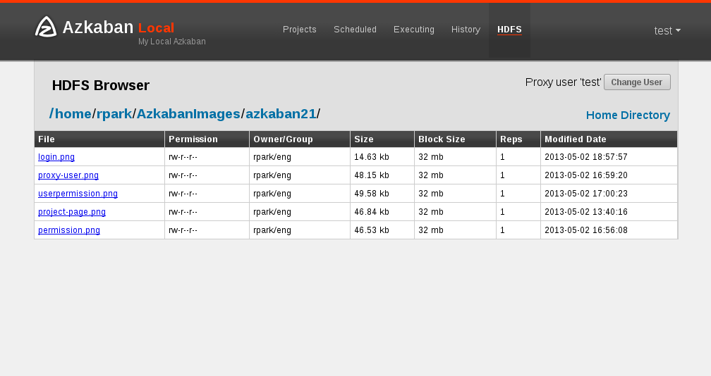

The Azkaban HDFS Browser is a plugin that allows you to view the HDFS FileSystem and decode several file types. It was originally created at LinkedIn to view Avro files, Linkedin’s BinaryJson format and text files. As this plugin matures further, we may add decoding of different file types in the future.

Download the hdfs plugin from the download page and extract it into the web server’s plugin’s directory. This is often azkaban_web_server_dir/plugins/viewer/.
By default, Azkaban HDFS browser does a do-as to impersonate the logged-in user. Often times, data is created and handled by a headless account. To view these files, if user proxy is turned on, then the user can switch to the headless account as long as its validated by the UserManager.
These are properties to configure the HDFS Browser on the AzkabanWebServer. They can be set in azkaban_web_server_dir/plugins/viewer/hdfs/conf/plugin.properties.
| Parameter | Description | Default |
|---|---|---|
| viewer.name | The name of this viewer plugin | HDFS |
| viewer.path | The path to this viewer plugin inside viewer directory. | hdfs |
| viewer.order | The order of this viewer plugin amongst all viewer plugins. | 1 |
| viewer.hidden | Whether this plugin should show up on the web UI. | false |
| viewer.external.classpath | Extra jars this viewer plugin should load upon init. | extlib/* |
| viewer.servlet.class | The main servelet class for this viewer plugin. Use azkaban.viewer.hdfs.HdfsBrowserServlet for hdfs browser | |
| hadoop.security.manager.class | The class that handles talking to hadoop clusters. Use azkaban.security.HadoopSecurityManager_H_1_0 for hadoop 1.x | |
| azkaban.should.proxy | Whether Azkaban should proxy as individual user hadoop accounts on a secure cluster, defaults to false | false |
| proxy.user | The Azkaban user configured with kerberos and hadoop. Similar to how oozie should be configured, for secure hadoop installations | |
| proxy.keytab.location | The location of the keytab file with which Azkaban can authenticate with Kerberos for the specified proxy.user | |
| allow.group.proxy | Whether to allow users in the same headless user group to view hdfs filesystem as that headless user | false |